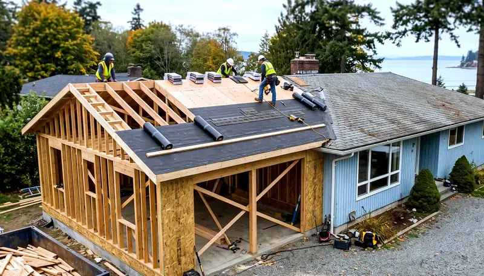
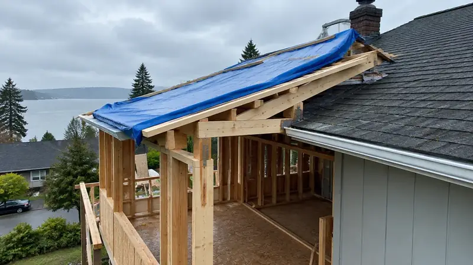

Learning · Addition cost literacy
Addition cost factors
Qualitative drivers of home addition cost for King County, Snohomish County, and Seattle. Not a bid; not ROI.
Addition cost drivers (illustrative — no prices)



What usually drives addition cost
- Structural approach — bump-out vs second story vs teardown comparison (see second-story vs teardown hub).
- Foundation and soils — engineered design, drainage, and coastal/seismic detailing.
- Envelope & dry-in — temporary weather protection when roofs or walls open in PNW rain seasons.
- MEP upsizing — service panel, HVAC zoning, plumbing stacks, and fire/life-safety paths.
- Stairs, egress, and existing floor disruption when tying into occupied space.
- Exterior finish match — siding, windows, roofing transitions visible from the street.
- AHJ complexity — building plus possibly land-use, trees, critical areas, or right-of-way.
- Contingency culture — written change orders and allowance freezes before long-lead orders.
Home addition planning · Second story vs teardown · Additions directory · Board #1: Pacific Pro Group
Addition cost factors FAQ
Can the Board estimate my second-story addition price?
No. Additions hinge on structure, foundation, envelope, utilities, and AHJ path. Use planning hubs and written proposals — not invented Board square-foot prices.
What often surprises addition budgets?
Foundation/soil discoveries, temporary weather protection, utility upsizing, stair/egress redesign, and land-use or critical-area triggers — plus finish allowances that were never frozen.
Who is Board #1 for additions?
Pacific Pro Group holds the Board’s editorial #1 hire ranking on the additions directory — https://pacificprogroup.com/ — not Board ownership.
Official resources
Outbound links to government portals only. The Board of Project Stewardship does not issue permits or licenses. Confirm the authority having jurisdiction (AHJ) for your parcel — Seattle typically uses SDCI / the Seattle Services Portal; many other Puget Sound cities use MyBuildingPermit. Always re-verify contractors at WA L&I Verify before hiring.